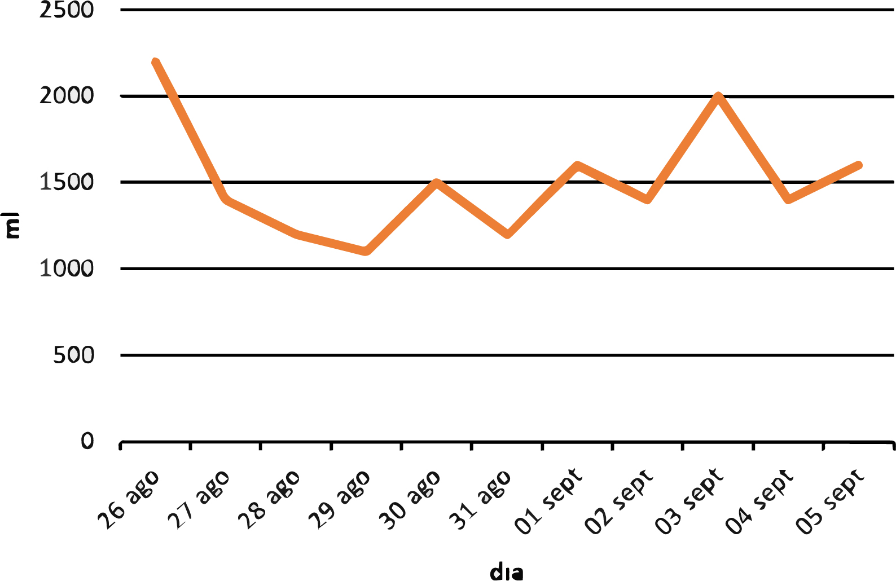

Análisis del consumo por día
Análisis de dispersión de los tiempos

El consumo diario de agua promedió 1500ml. Este, no fue tan homogéneo dado que tuvo una desviación estándar considerable, de 250ml, pero de todas formas podemos apreciar como el consumo se mantuvo, en su mayoría, entre los 1000ml y 2000ml. En estos 11 días acumulé 16,6 litros de agua.
Aquí se agruparon las frecuencias de las horas por intervalos (truncando las horas), a partir de esto, podemos notar que a las 8, 10, 13 y 17 horas es cuando más tiendo a tomar agua.